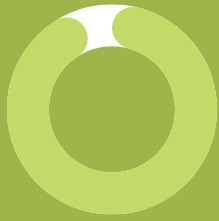

Habilidades duras.

Adobe Premiere
After Effects

Adobe Photoshop

Inglés
So
bre
mí.
Verónica
Vargas.
Nacida en la ciudad de Formosa y radicada en Buenos Aires. Estudiante de la carrera de Diseño de Imagen y Sonido de la Universidad de Buenos Aires (FADU). Actualmente trabajando como coordinadora de producción de películas y series en el estudio estadounidense de animación “Composition Media” fundado por Carl Reed, ganador del Oscar en 2019 por el cortometraje animado “Hair Love”.
Dentro de su filmografía se puede encontrar:
“Golem” 2016, donde participó del grupo de postproducción del cortometraje en stop motion producido por la Fundación de Cine y dirigido por Santiago Riquelme.
Fue directora del cortometraje animado llamado “El sonido”, expuesto en el Museo de Arte Contemporáneo de la Boca y fue adquirido para la programación estable de Cine.ar tras ganar en el Festival Cartón 2021.
Trabajó como directora y guionista en el corto documental “Yenka”, el cual encontró su paso en festivales nacionales e internacionales, tales como el Festival Internacional de Cine de Mar del Plata 2020.
En 2020 fue beneficiaria de la beca de circulación del Fondo Nacional de las Artes por el mismo proyecto y en 2022 fue adquirido por Vivamos Cultura de la Ciudad de Buenos Aires. Formó parte del equipo del cortometraje en stop motion “Sembrar/Sow” de Agostina Ravazzola, que contó con el apoyo del Mecenazgo 2018, el Fondo Metropolitano de las Artes y The animation Workshop en Viborg, Dinamarca. “Sembrar” se encuentra actualmente en distintos festivales alrededor del mundo.
Adobe Premiere
After Effects
Adobe Photoshop
Inglés
Reel from Verónica V on Vimeo.